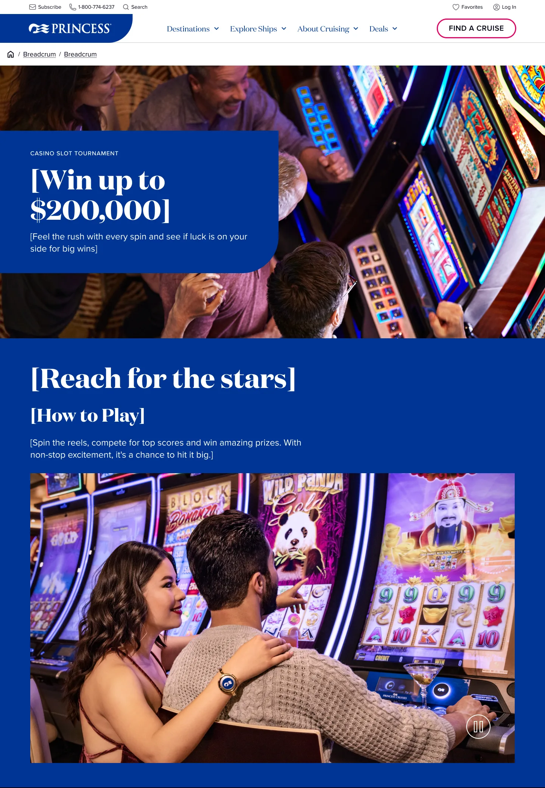
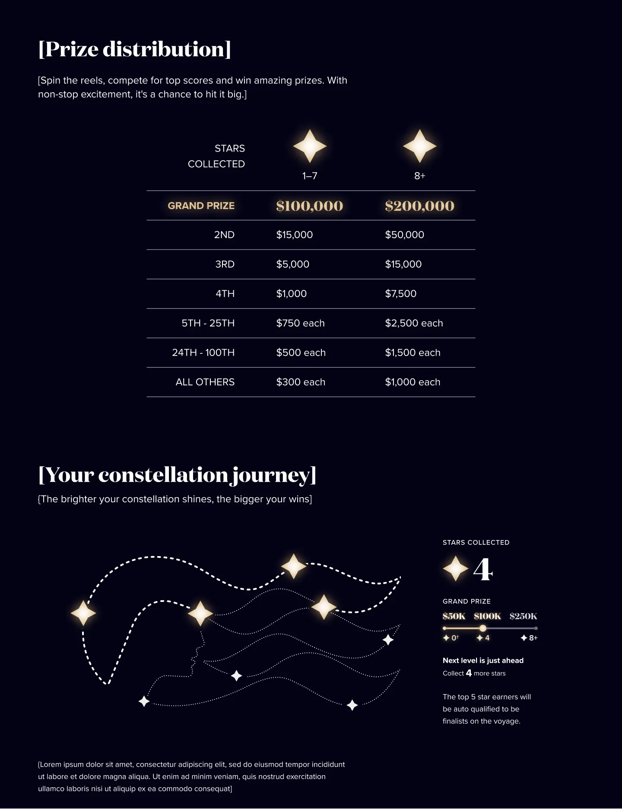
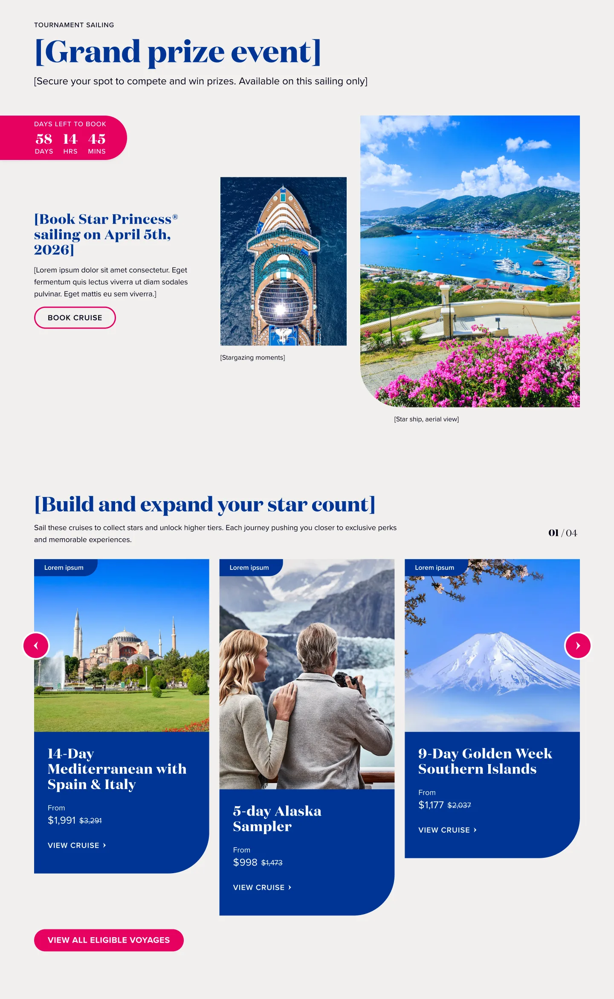
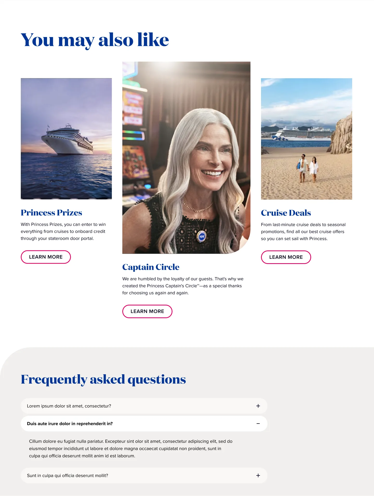
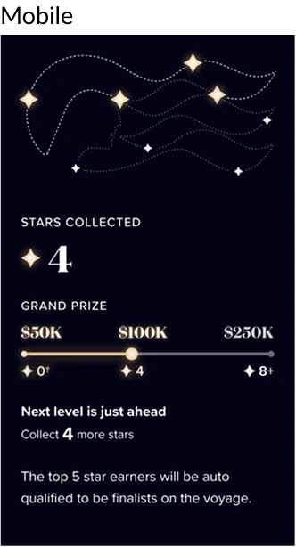
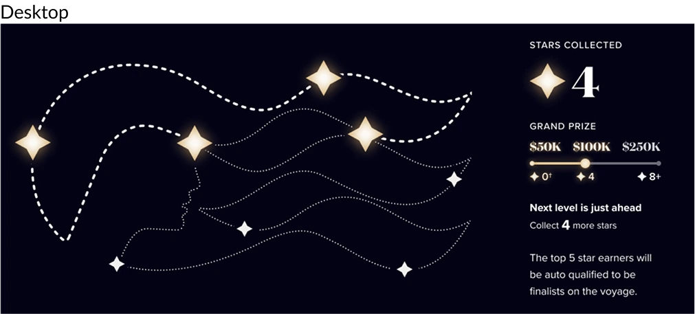
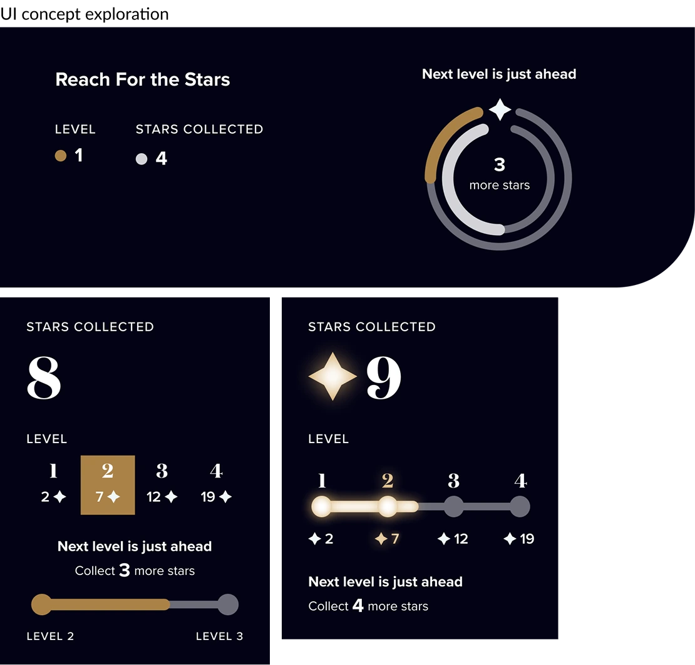
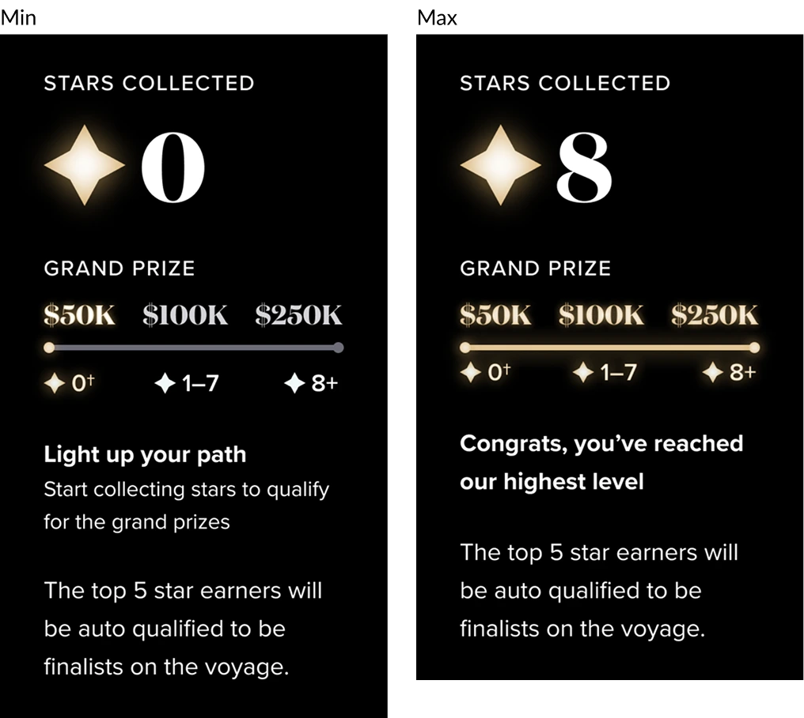
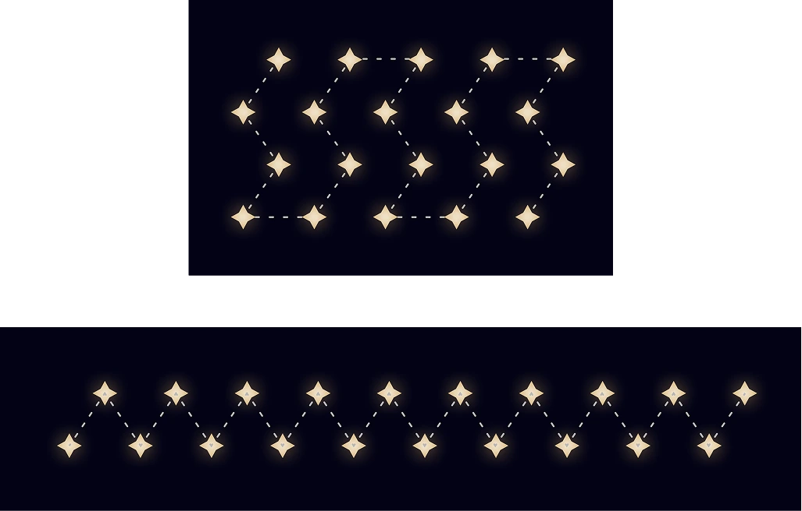
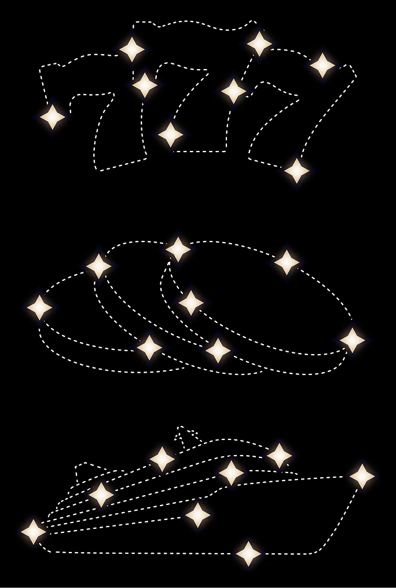

Gamified slot tournament experience. The concept involved users sailing on specific cruises to qualify for tournament entry and boost their potential winnings.
However, the existing digital ecosystem lacked the space where players could track their progress, understand the rules, and access cruise-specific tournament details.
Sailing on certain cruises would earn the player a star. The more stars, the higher their prize potential. To support this initiative, the company needed a dedicated webpage that served multiple functions.
The page had to educate users on how the tournament works and how to earn stars, display real-time status updates on each player's progress, provide cruise-specific details (ship name, itinerary, sailing dates), and create a seamless, engaging experience that matched the energy of the tournament itself.

The page had to do four jobs at once — educate, track, inform, and energize — without overwhelming the player or fragmenting the experience.



The component displays how many stars a player has earned so far, how close they are to unlocking the next prize tier, and encourages continued play by highlighting upcoming rewards. Built with modularity in mind, it supports dynamic updates, allowing levels to be adjusted without a redesign.
Benefits — boosts engagement and reinforces a sense of achievement and momentum. Its scalable design ensures that as tournament structures evolve, the component can adapt seamlessly without compromising usability or visual consistency.


The user experience and the business rules of the tournament were developed in parallel. The number of levels and the stars required to reach each one were still being redefined while the UI was in its exploration phase.
Design focused on flexibility — accommodating anything from a fixed maximum level to an undefined end.

The final business definition was two levels, which let us land on a clean component. After designs were already thoroughly documented and handed to developers, it changed to three.
Another significant update was the rule that players could qualify even with zero stars. We managed to quickly come up with solutions in a very short period of time.

To display current progress and set the expectation of how many stars it takes to reach the maximum level, an exploration of constellation shapes was made. We started from an MVP version of simple zigzags; even before knowing how developers would incorporate the illustration into the page, we were considering versions that could minimize developer effort.
The explored shapes relate to casinos and cruising. Scalability was a core concept while constructing the constellation — if the tournament changes the number of stars, it should be easy to update by simply adding stars to the dashed lines.


After exploring the constellation shape, we settled on the company's iconic sea witch — already charged with mythologic connotation, a common motif in casino imagery.
We had several conversations with the marketing department to align on the best treatment for the constellation. On one hand we needed to clearly differentiate completed from pending progress; on the other we needed to avoid the logo looking too dull. The final graphic is the result of an iterative, collaborative process.
The Slot Tournament landing page contributed to a 9% increase in casino-related bookings on a 3-month trend, driven by players seeking to maximize their tournament standing through eligible sailings.
The page achieved $5.2 million in revenue during its first year on market — a clear validation that giving the tournament a dedicated digital home turned scattered awareness into measurable conversion.
Treating the page as a "single surface, four jobs" exercise rather than a marketing landing page kept the design honest. Players came with intent — the page just needed to honor it without fanfare.
The real-time status component was the highest-leverage piece of the page. I'd push for that as the anchor in any future tournament or loyalty product.